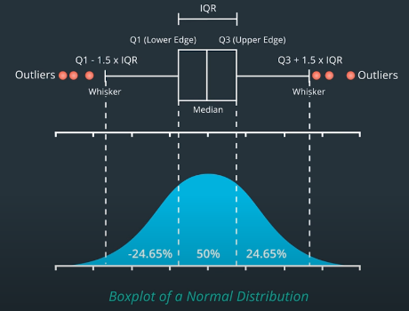
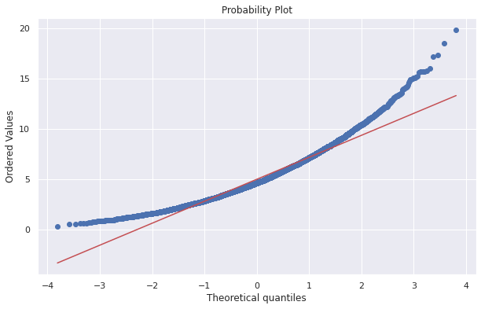

Data Processing
Table of Contents
1 Outliers
1.1 Source of Outliers
- Fat Finger Errors
- Data Errors: missing value, 0s, duplicate values…(could check if volume was 0)
- Earnings, mergers and other announcements
1.2 Spotting Outliers in Raw Data
- Screen the data
- Rule-based searching and filtering methods. Examples:
- percent change thresholds (but will yield many false positives)
- can use volume information to improve the accuracy of the filter
1.3 Handling Outliers in Raw Data
- Cross check with another data source
- Minimize false positives
- Decide how to deal with data values are missing
- May keep the missing data, especially when they represent a real non-tradable event.
1.4 Spotting Outliers in Signal Returns
- Look at the return distribution (skeptical when it's too good)
- Compare return distribution to the normal distribution using QQ Plots
- A good quant should try to understand the cause of outliers and returns.
- Check the dates and stocks that causes the difference.
1.5 Handling Outliers in Signal Returns
- Case1: Data error from venders
- fix it by replacing with correct data from other venders
- try to determine if the result will be greatly affected if the data is replaced by any reasonable value.
- Case2: Due to legit market events
- exclude small market cap assets (they're hard to predict)
- Case3: Earnings, announcements
- check if you can pause before these events
- try to avoid losing money when you can't pause before the event
1.6 Ways to Reduce Effect of Outliers
- Moving Windows: But signals may be generated with a slight delay depending on the window size.
- Use average prices of many stocks or even entire sector or index.
- (Optional) May incorporate Bayesian methods or machine learning into outlier detection.
1.7 Winsorizing
Clip 95th and 5th percentile. Replace the outlier with a number at the 95th/5th percentile.
2 Ways to Handle Sudden Fluctuations
Stock prices are volatile during market crashes. Two ways to handle:
- Including the data during these periods
- the results will be highly skewed.
- the signals won't perform optimally on normal trading days.
- Not including these data
- When the event happens, the signal may perform really poorly.
- To establish stop loss levels thresholds to prevent further losses.
3 Testing for Stationary
- Stationary
- The mean, variance, covariance are the same over time. In particular, we want to check if the variance of data is stable over time.
- Homoscedasity
- Terminology for constant variance over time.
- Heteroskedasticity
- Terminology for a changing variance over time.
3.1 Breusch-Pagan Test
To check if the data is Homoscedasity or Heteroskedasticity.
- \(H_0\): The data is Homoscedasity.
- \(pvalue\le 0.05\): The data is Heteroskedasticity.(with 95% confidence)
One Use Case: It takes the residuals from a regression, and checks if they are dependent upon the independent variables that we fed into the regression. The test does this by performing a second regression of the residuals against the independent variables, and checking if the coefficients from that second regression are statistically significant (non-zero). Thus, the data is likely heteroscedastic.
from statsmodels.stats.diagnostic import het_breuschpagan result = het_breuschpagan(residuals, independent_vars) result.f_pvalue
4 Testing for Normality
4.1 Why to Check If the Data is Normal?
When we use statistical models such as regression. We use hypotheses tests to check if we can trust the model parameters of the model. These tests assume that our data is normally distributed. If our data is not normally distributed, these tests tend to tell us the model is valid when in fact it is not.
4.2 Box Plot
- Use Boxplot to check for symmetry.

4.3 QQ Plot
Quantile-Quantile Plot. Common quantiles are:
- Quartiles: 4 groups
- Deciles: 10 groups
- Percentiles: 100 groups
import matplotlib.pyplot as plt from scipy.stats import gamma data = gamma.rvs(a=5, size=10000) stats.probplot(data, dist="norm", plot=plt) plt.show()

4.4 Single Number Testing (cutoff point)
- Shapiro-Wilk Test
stats.shapiro: \(H_0\) - data is normally distributed - D'Agostino-Pearson Test: \(H_0\) - data is normally distributed
Kolmogorov-Smirnov Test: \(H_0\) - given two distribution, they are the same.
- SPSS Kolmogorov-Smirnov Test for Normality
- Proper normalization to have the right p_values and ks_values from Kolmogorov-Smirnov test (KS test)?
from scipy import stats sample = stats.lognorm.rvs(s=0.5, loc=0.0, scale=1.0, size=1000) normal_args = (sample.mean(), sample.std()) result = stats.kstest(sample, "norm", normal_args) assert result.pvalue < 0.05
5 Transform Data into Normality & Stationary
- Use
logfunction to get more normal data - Use \(ln(p_{t}/p_{t-1})\) to get more homosceedastic data.
5.1 Apply Box-Cox Transformation (to Normality)
\[T(x)=\frac{x^{\lambda}-1}{\lambda}\]
- \(\lambda\) is a constant value you can choose
- inputs: any dataset
- outputs: more normally distributed dataset
- \(T(x)=\ln(x)\) if we choose \(\lambda=0\)